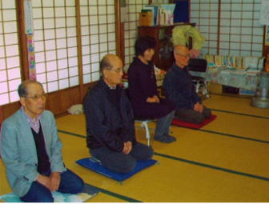
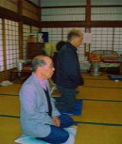
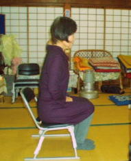

静坐に不安をお持ちの皆様に
静坐が初めての皆さんの中には、足の痺れや膝が悪く座ることが難しいとお考えの方がいらっしゃると思います。世田谷静坐会では静坐中に足の痺れや姿勢保つのが苦しい時には、写真のように膝を立てて、痺れや姿勢の崩れをリセットすることを指導しています。また、膝が悪く座ることが難しい方には椅子に座って静坐する「椅子静坐」も可能です。どうぞ安心して、気軽に参坐なさって下さい。

◎最近の静坐会の様子（一部分）
 |
 |
|
痺れの解消 |
椅子静坐 |
|
| ◎苦しくなったり、足が痺れて痛い時は 我慢せずに両膝で立つと治ります。 |
◎坐ることが難しい方は椅子で静坐 することもできます。 |